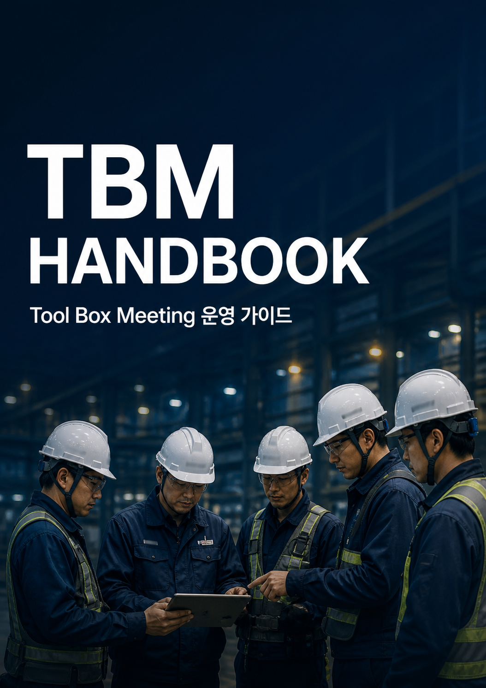

KNOWLEDGE PLATFORM
ONOFF Academy
지식이 연결되고, 경험이 성장시키는 ONOFF의 공식 학습 플랫폼
Library
철학 · Workflow · Today's Work · 전자문서 · Safety Report
목적 · 9단계 · 진행 시나리오 · 생명안전수칙
목적 · 작성 · 사례
목적 · S-TRA · 유해위험요인 · 재해형태 · 안전조치
하역기계 · 유해물질 · 활선작업 · 로봇작업
설비점검 · 예방점검 · 기준
비상대응 · 대피 · 응급조치
사고사례 · Near Miss · 개선사례
ONOFF Knowledge Library
현장의 지식을
한곳에서
책을 선택하고, Chapter를 따라 배우고, 실제 Platform Workflow로 연결합니다.
- 01Read왜 필요한지 이해하기
- 02Learn사례와 Workflow 연결하기
- 03Practice나의 업무에 적용하기
- 04Complete다음 Chapter로 이어가기
한 번에 모든 것을 읽지 않습니다. 하나의 Scene에 집중하고 다음으로 이동합니다.
START YOUR JOURNEY
추천 콘텐츠
현장의 안전 원칙부터 실제 행동까지 하나의 과정으로 학습합니다.
12 Chapters · 약 45분최근 학습 위치
학습을 시작하면 마지막으로 읽은 Chapter가 이곳에 표시됩니다.
KNOWLEDGE LIBRARY
Library
업무 분야별 Book을 선택해 학습을 시작합니다.
현장 안전 Workflow와 Platform 사용 기준
설비 유지보수의 기본 원칙과 표준
제어 시스템 이해와 현장 운영 기준
자동화 시스템과 운영 지식
현장을 이끄는 리더의 판단과 소통
설비 신뢰성을 위한 점검과 정비 지식
PLATFORM HANDBOOK
Platform Handbook
ONOFF Platform의 철학과 업무 Workflow를 확인합니다.
- 구성
- 3 Parts · 5 Chapters
LEARNING MODE
어떻게 학습하시겠어요?
같은 Workflow를 목적에 맞는 방식으로 확인합니다.
Platform
Daily Safety
Safety Operation
MY ACADEMY
나의 학습 공간
읽은 Book, 진행 중인 Chapter와 Practice 기록이 앞으로 이곳에 연결됩니다.
Tool Box Meeting
TBM HANDBOOK
TBM이란 무엇인가?
Tool Box Meeting — 작업 시작 전 모든 작업자가 함께 위험요인을 확인하고 안전하게 작업을 시작하기 위한 현장 참여형 안전활동입니다.

TBM은 체크리스트를 작성하기 위한 시간이 아닙니다.
오늘 작업의 위험요인을 함께 확인하고 같은 기준으로 안전하게 작업을 시작하기 위한 가장 중요한 안전활동입니다.
핵심 내용
TBM 목적
- 작업 내용 공유
- 위험요인 확인
- 보호구 점검
- 역할 확인
- 비상상황 공유
- 작업 전 안전 확보
TBM HANDBOOK
TBM 진행 9단계
작업 준비부터 최종 확인까지 같은 순서로 진행합니다.
- 01작업과 인원 확인오늘 작업, 작업 위치, 참여 인원과 역할을 확인합니다.
- 02건강상태 확인작업 수행에 영향을 줄 수 있는 컨디션과 특이사항을 확인합니다.
- 03작업내용 공유작업 범위와 완료 조건을 모든 참여자에게 설명합니다.
- 04작업순서 확인작업 단계와 작업자 간 협업 순서를 확인합니다.
- 05위험요인 확인각 단계에서 발생할 수 있는 위험을 작업자 의견과 함께 찾습니다.
- 06안전조치 확인제거, 차단, 격리와 작업방법 등 위험별 조치를 확인합니다.
- 07보호구와 장비 확인필요한 개인보호구와 작업 도구의 상태를 점검합니다.
- 08비상대응과 질문비상 시 행동, 연락방법을 공유하고 작업자의 질문을 확인합니다.
- 09최종 확인모든 참여자가 이해했는지 확인하고 작업 시작 여부를 결정합니다.
TBM HANDBOOK
TBM 진행 시나리오
리더의 질문과 작업자의 확인이 함께 이루어져야 합니다.
- 작업 소개“오늘 작업은 A구역 설비 점검이며 완료 기준은 점검표 전 항목 확인입니다.”
- 위험 질문“이 작업에서 가장 먼저 발생할 수 있는 위험은 무엇입니까?”라고 작업자에게 질문합니다.
- 조치 합의에너지 차단, 접근 통제, 보호구와 작업 순서를 참여자가 함께 확인합니다.
- 최종 복창각 작업자가 자신의 역할과 중지 기준을 말하고 이해 여부를 확인합니다.
TBM HANDBOOK
생명안전수칙 10
생명과 직결되는 작업은 시작 전에 반드시 핵심 통제사항을 확인합니다.
- 에너지 차단정비 전 전기·압력·열·중력 에너지를 차단하고 잠금 상태를 확인합니다.
- 추락 예방고소작업 시 작업발판, 난간과 추락방지 보호구를 확인합니다.
- 밀폐공간출입 전 허가, 가스농도 측정, 환기와 감시인을 확인합니다.
- 양중작업인양계획, 줄걸이 상태를 확인하고 매달린 하중 아래에 들어가지 않습니다.
- 차량·중장비작업반경을 구분하고 유도자와 운전자의 신호체계를 확인합니다.
- 화기작업가연물을 제거하고 화기허가, 소화설비와 화재감시자를 확인합니다.
- 전기작업무전압 상태와 접지, 절연보호구 및 접근 제한을 확인합니다.
- 유해물질물질 정보, 노출 방지, 보호구와 누출 대응방법을 확인합니다.
- 회전체·협착방호장치와 안전거리를 확보하고 가동 중 접근하지 않습니다.
- 작업중지예상하지 못한 위험이 나타나면 누구나 즉시 작업을 중지하고 보고합니다.
PLATFORM PHILOSOPHY
Platform 철학
기능이 아니라 업무 흐름을 연결합니다.
프로젝트는 단순한 작업 목록이 아니라 안전 승인을 받은 작업 단위입니다. 작업자는 프로젝트를 새로 만드는 대신 오늘 수행할 작업을 선택합니다. Safety Start는 작업 생성 기능이 아니라 준비된 작업을 시작하는 절차입니다.
WORKFLOW · OVERVIEW
Workflow Overview
ONOFF는 기능보다 Workflow를 먼저 설계합니다. 사용자는 메뉴를 찾는 것이 아니라 업무 Workflow를 따라 작업을 수행합니다.
SCENE 01 · WHY
왜 Workflow를 먼저 이해해야 할까요?
현장에서는 메뉴 이름보다 다음 행동이 더 중요합니다. ONOFF Academy는 기능을 외우게 하지 않고, 업무가 시작되고 완료되는 흐름을 먼저 이해하도록 돕습니다.
SCENE 02 · CASE
같은 작업도 준비 상태에 따라 다릅니다.
승인되지 않은 작업을 바로 시작하면 필요한 안전문서와 확인 절차가 누락될 수 있습니다. Supervisor가 작업을 ACTIVE로 준비하고 Worker가 오늘 작업으로 수행하는 이유입니다.
“무엇을 눌러야 하지?”가 아니라
“지금 무엇을 확인해야 하지?”를 생각합니다.
Supervisor Workflow
작업의 기준을 정의하고 안전 승인 후 Worker에게 제공합니다.
- 01작업 정의Project · 일반작업
본사작업 · 현장지원 - 02안전 승인작업 범위와 필수 안전문서 검토
- 03ACTIVE승인된 작업을 운영 가능한 상태로 전환
- 04작업 제공Worker의 오늘 작업 선택 대상으로 제공
Worker Workflow
승인된 작업을 선택하고 필요한 안전 절차를 완료한 뒤 시작합니다.
- 01작업확인배정된 ACTIVE 작업 확인
- 02전자문서필수 Checklist 확인
- 03안전확인현장 안전사항 점검
- 04전자서명확인 완료 기록
- 05작업진행승인 범위 내 수행
- 06종료결과와 특이사항 기록
Key Principle
Platform 전체에서 유지하는 핵심 운영 기준입니다.
Project는 안전 승인을 받은 작업입니다.
Worker는 Project를 관리하지 않습니다.
Worker는 오늘 작업을 선택합니다.
필요한 전자문서는 자동으로 연결됩니다.
Safety Report는 Event Workflow입니다.
FAQ
Workflow에서 자주 확인하는 기준입니다.
왜 TBM 메뉴가 따로 보이지 않나요?
TBM은 독립 메뉴가 아니라 전자문서 자동 확인 단계에서 자동으로 표시됩니다.
SCENE 06 · COMPLETE
Workflow의 기본 구조를 이해했습니다.
이제 오늘 작업에서 실제 Worker Workflow가 어떻게 시작되는지 확인할 수 있습니다.
PROJECT GUIDE
Project
안전 승인을 받은 작업의 기준 정보입니다.
승인 Workflow
- 생성작업 범위와 기본 정보를 등록합니다.
- 안전문서 설정SOP, 위험성평가 및 추가 안전서류를 지정합니다.
- 안전관리 검토관리자가 작업 조건과 준비 문서를 확인합니다.
- ACTIVE승인 완료 후 오늘 작업에서 선택할 수 있습니다.
DAILY WORK GUIDE
Daily Work
작업자가 오늘 수행할 작업을 시작하는 흐름입니다.
- 오늘 작업 선택ACTIVE 작업에서 실제 수행 대상을 선택합니다.
- 필요 문서 확인작업 기준에 따라 전자문서가 자동 제시됩니다.
- 전자서명작업자가 문서 내용을 확인하고 서명합니다.
- Safety Start안전준비 사항을 최종 확인하고 작업을 시작합니다.
WORK START
Safety Start
필수 안전준비를 확인한 뒤 오늘 작업을 시작합니다.
개요와 목적
Safety Start는 새로운 작업을 만드는 기능이 아닙니다. Daily Work에서 선택한 작업의 프로젝트 정보, 필수 전자문서와 안전준비 체크리스트를 최종 확인하는 시작 절차입니다.
- 작업 확인선택한 작업과 작업 위치를 확인합니다.
- 문서 확인필수 문서와 전자서명 완료 여부를 확인합니다.
- 안전준비 확인SOP, 위험성평가와 추가 항목을 확인합니다.
- 등록 및 검토제출 후 Supervisor의 운영 Workflow를 따릅니다.
현장에서 확인한 사실을 기준으로 작성하고, 이전 작업의 내용을 그대로 반복 입력하지 않습니다.
DOCUMENT ENGINE
Electronic Documents
작업 조건에 따라 필요한 문서를 자동으로 연결합니다.
EVENT WORKFLOW
Safety Report
작업 중 발생한 안전 Event를 기록하고 조치합니다.
인적·물적 피해가 발생한 사건
피해 없이 종료되었지만 사고 가능성이 있었던 상황
현장에서 발견한 위험 상태 또는 행동
안전성과 업무 품질을 높이기 위한 제안
작업자가 전달하는 안전 관련 의견
OPERATIONS
Dashboard
운영 현황, 최근 활동과 빠른 작업을 확인합니다.
운영 현황
Safety Start와 Safety Report의 주요 상태를 확인합니다.
최근 운영 데이터
최근 등록된 작업과 Event의 상태를 확인합니다.
Quick Action
자주 사용하는 Safety Start와 Safety Report로 이동합니다.
ADMINISTRATION
Administration
현장 운영과 안전 검토 기준을 관리합니다.
- 승인 대기 및 검토 중 작업 확인
- Project 안전준비 체크리스트 검토
- Safety Start 승인 또는 반려
- Safety Report 조치 상태 확인
- 전자문서 제출 및 서명 현황 확인
ADMINISTRATION
User Management
사용자 정보, 역할과 사용 상태를 관리합니다.
- 사용자 및 권한 상태 확인
- Project 운영 기준 관리
- 전체 Safety Workflow 모니터링
- 전자문서 Template 및 완료 현황 확인
- 운영 장애와 데이터 연결 상태 확인
ADMINISTRATION
Settings
Platform 운영 기준과 환경 정보를 확인합니다.
운영 원칙
설정은 전체 Workflow에 영향을 줄 수 있으므로 변경 전 영향 범위를 확인합니다. Production 환경 설정은 승인된 배포 절차를 통해서만 변경합니다.
SUPPORT
FAQ
자주 확인하는 운영 기준입니다.
Project와 Daily Work의 차이는 무엇인가요?
Project는 승인된 작업 기준이고 Daily Work는 그중 오늘 수행할 작업을 선택하는 절차입니다.
전자문서를 직접 찾아야 하나요?
아니요. 선택한 작업의 기준에 따라 필요한 문서가 자동으로 제시되는 구조입니다.
Safety Report는 매일 작성하나요?
아니요. 사고, Near Miss, 위험제보, 개선제안 또는 종사자의견이 발생한 경우 작성합니다.
RELEASE NOTES
Release Notes
Academy Documentation 변경 이력입니다.
Sprint A-007 · Worker First Home
Home을 처음 사용하는 작업자 기준으로 재배치하고 3분 Quick Start Workflow를 최상단에 적용했습니다.
Sprint A-006 · Documentation Quality
Workflow 중심 Hero, Supervisor→Worker Diagram, 한국어 Breadcrumb와 Navigation·Typography 가독성을 개선했습니다.
Sprint A-005 · Documentation Environment
Live Reload 개발 환경, Academy Home, 한국어 Navigation, 단색 Documentation Icon과 Workflow Diagram 연결 표현을 개선했습니다.
Sprint A-004 · Workflow Overview Standard
Supervisor와 Worker Workflow Diagram, 핵심 원칙, FAQ, Related Pages 및 Chapter Navigation을 Academy 표준 Template로 확정했습니다.
Sprint A-002 · Official Manual
공식 Navigation, Platform Workflow, 역할별 운영 가이드, 공통 안내 Component와 A4 Print Manual 구조를 추가했습니다.